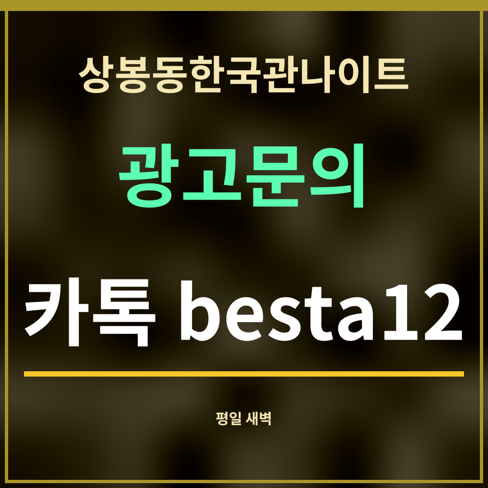

19세 미만 출입 금지
상봉동한국관나이트 평일 새벽은 몇 시까지 붐빌까
제휴 없는 정보 안내 · 카카오맵 시간대별 방문 지표(2026년 9월 27일 확인). 자정을 넘긴 시각은 다음 날 칸의 값이라, 표에는 「전날 밤 → 그날 새벽」으로 적었습니다.

요약: 주중 새벽은 0시가 가장 높고, 새벽 5시에는 0시의 5분의 1 아래로 줄어듭니다. 0~5시를 더하면 목요일 밤 → 금요일 새벽이 12,717로 주중 가운데 가장 높고, 월요일 밤 → 화요일 새벽이 7,538로 가장 낮습니다.
주중 새벽 0·2·5시
| 구간 | 0시 | 2시 | 5시 | 0~5시 합 |
|---|---|---|---|---|
| 일요일 밤 → 월요일 새벽 | 3,764 | 1,927 | 538 | 10,326 |
| 월요일 밤 → 화요일 새벽 | 2,762 | 1,310 | 459 | 7,538 |
| 화요일 밤 → 수요일 새벽 | 3,142 | 1,402 | 555 | 9,237 |
| 수요일 밤 → 목요일 새벽 | 4,210 | 1,523 | 308 | 9,670 |
| 목요일 밤 → 금요일 새벽 | 4,961 | 2,149 | 592 | 12,717 |
숫자를 읽는 법
평일에는 다음 날 출근이나 약속이 있는 사람이 많아 자정 무렵부터 빠르게 줄어드는 흐름으로 읽을 수 있습니다. 반면 목요일 밤은 주말을 앞두고 자정 뒤에도 조금 더 이어집니다. 일요일 밤 → 월요일 새벽은 0시 값이 화·수요일 새벽보다 높습니다.
늦게까지 머물 생각이라면 돌아가는 방법을 미리 정해 두세요. 새벽 5시 반을 넘기면 7호선이 다니기 시작하고, 그 전에는 심야버스나 택시를 이용해야 합니다.
첫차 전에 움직여야 한다면
상봉동한국관나이트에서 180m 떨어진 망우역(중) 정류장에는 심야버스 N26과 N72가 섭니다. 상봉역 3·4번 출구 정류장(354m·369m)에도 N72가 지나갑니다(카카오맵 정류장 정보 · 2026년 9월 27일). 새벽 2~3시에 나선다면 7호선 첫차까지 두 시간 넘게 남으니, 심야버스 노선이 집 방향과 맞는지 먼저 보세요.
상봉동한국관나이트 앞에서 가장 가까운 정류장은 63m 거리의 중랑구방정환교육지원센터 정류장(2236번)입니다. 다만 이 정류장에는 심야 노선이 없습니다.
자주 묻는 것
한 줄 정리: 상봉동한국관나이트 평일 새벽은 0시가 정점이고 5시면 크게 한산해집니다.
초저녁 흐름은 18~20시 요일별 비교에 있습니다.